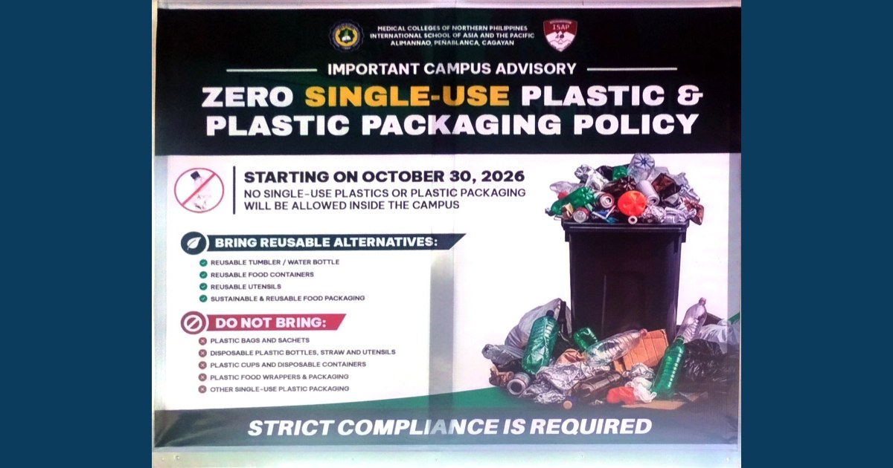

RDC Supports MCNP–ISAP Zero-Plastic Initiative, Calls for Shared Responsibility and Sustained Action

Beginning November 2026, the RDC calls on the MCNP–ISAP community to reduce single-use plastics, choose reusable alternatives, and make sustainability a daily institutional practice.
Read full article